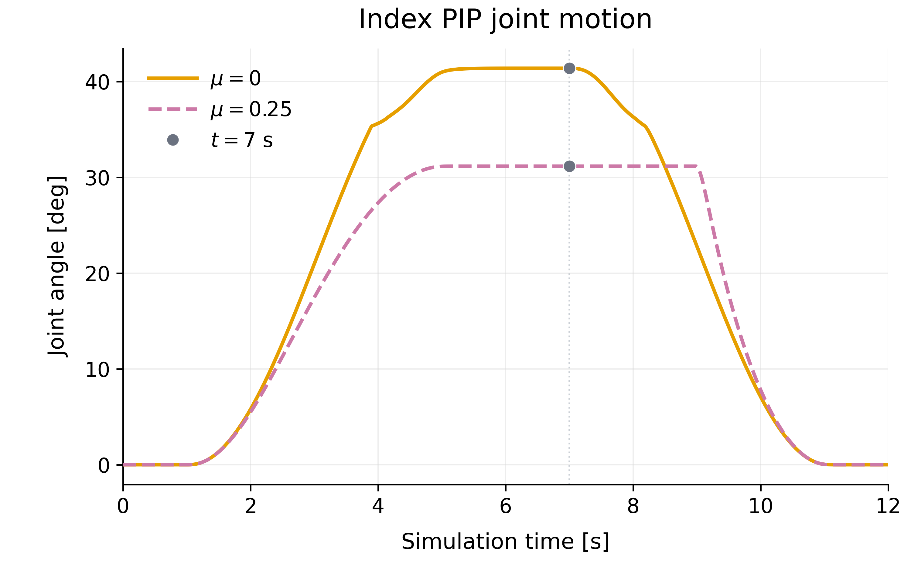
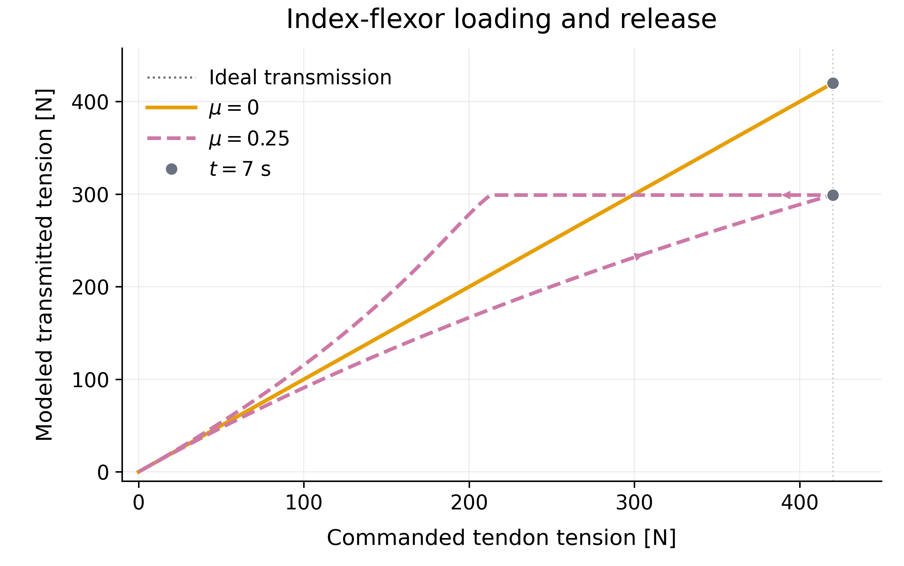

01 / System
System Overview
NewTen places an explicit transmission model between actuator commands and the torques applied to a simulated hand. Joint-state feedback updates routing and leverage; a stateful friction model computes transmitted tension; moment arms project that tension into joint torques. Newton advances the hand and its contacts, while saved states and telemetry support matched comparisons. The physical-measurement branch is a separate, ongoing validation effort.

02 / Motivation
Research Motivation
A tendon-driven hand converts motor effort into joint motion through routed cables, guides, and pulleys. A simplified command-to-torque mapping can miss tension changes along the route, posture-dependent mechanical leverage, and different responses during loading and release. Even identical commands can therefore produce different predicted motion and contact behavior. The research question is whether explicit transmission modeling improves predictions once both geometry and friction are identified from physical measurements.
The present simulation comparisons isolate the behavior of the transmission model. A visible difference between frictionless and friction-aware simulations establishes sensitivity to a modeled mechanism. Determining which model better predicts a real hand requires a separate, controlled hardware comparison.
03 / Design
System Design
Routing and mechanical leverage
A route determines which joints a tendon influences and how its tension becomes torque. The ORCA comparison shown below uses estimated routes; its index tendon is explicitly identified as an estimated flexor. CAD-informed route reconstruction and geometric checks are separate development work, with remaining uncertainty in physical centerlines and clearance. The simpler four-link example illustrates route extent without claiming to reproduce ORCA tendon geometry.


History-dependent transmission
The transmission layer retains prior tension and a pull, stick, or release state. Routing bends determine frictional attenuation, and the loading history changes how commanded effort reaches the distal route. The resulting tension is projected through the moment-arm model into joint torques. This is why the same instantaneous command can correspond to different modeled tension during loading and unloading; the hysteresis plot in Results shows that distinction directly.
Dynamics and observations
Newton supplies rigid-body integration and object contact, using Warp as its computational foundation. In the illustrated ORCA workflow, the transmission calculation remains on the CPU; the diagram separates this from the GPU physics path. Saved joint states and tension records support analysis without rerunning physics. ChArUco camera calibration and ArUco pose tracking form a separate measurement pipeline; marker poses alone do not establish validated joint-angle or tendon-force measurements.
04 / Method
Methodology
The simulation workflow keeps the route, transmission, and dynamics stages explicit so that assumptions can be changed and checked independently. Comparisons apply the same command schedule to both cases, then inspect the resulting motion and tension records. The small arm demonstration makes the effect of route extent visible before the more complex hand example.
-
Configure the route
Specify the hand or arm model, tendon extent, moment arms, friction setting, and initial transmission state.
-
Compute transmission
Update routing-dependent attenuation and retained pull, stick, or release state for the current command.
-
Apply joint torques
Map transmitted tendon tensions into joint torques through the configured mechanical leverage.
-
Advance and record
Step Newton dynamics and save joint motion and transmission outputs for synchronized inspection.
-
Compare matched cases
Review equal-command simulations while keeping the selected model assumptions and evaluation scope visible.
05 / Experiments
Experimental Setup
The ORCA diagnostic compares μ = 0 and μ = 0.25 under identical six-tendon commands, shared geometry, and a fixed-ball scene. These are simulation parameters, not fitted physical friction coefficients. The 12-second schedule opens, loads, holds, unloads, and settles the hand. Motion and transmission are evaluated together so that a change in modeled tension can be related to a change in joint response.
| Condition | Recorded setting |
|---|---|
| Comparison | μ = 0 and μ = 0.25; identical actuator commands |
| Simulation interval | 0–12 s; 0.002 s time step; 12 substeps |
| Command phases | Open 0–1 s; load 1–5 s; hold 5–7 s; unload 7–11 s; settle 11–12 s |
| Displayed signals | Index PIP angle [deg] and commanded/model-transmitted index-flexor tension [N] |
| Evidence type | Preserved matched simulation replay; 6,001 saved samples per case |
The video and the two plots use the same preserved replay, 101326_013929_poster_asset_replay, of reference experiment 101126_211648_camera_b_60_20. Rendering selects saved timestamps for all panels together. Retained original command and transmission records match the replay; the original run’s full joint trajectories were unavailable, so complete joint-by-joint identity to that earlier execution cannot be established.
06 / Results
Evaluation & Results
The evaluated question is whether changing the modeled tendon friction changes transmission and motion under the same commands. The synchronized views and plots show that it does: the friction-aware case reaches a different flexion state and follows a different release response. This establishes the behavior of the implemented model in simulation; it does not identify the physical coefficient or establish which case better predicts hardware.
Joint response during loading and release
The index PIP traces separate during loading, and the friction-aware case retains flexion later into the release phase. The plot follows the same index coordinate across the complete saved sequence rather than comparing unrelated poses. Its time axis and 7-second markers make the relationship to the video explicit.

Transmission depends on loading history
The frictionless trace follows ideal commanded-to-transmitted tension. In the friction-aware case, the loading and release paths differ, producing a loop when tension is plotted against command. The plotted signal is model-transmitted tendon tension, not a force-sensor measurement or a finger–ball contact-force estimate. This distinction matters when interpreting the hand’s different motion.

07 / Discussion
Discussion & Limitations
What the current evidence establishes
The available demonstrations show an implemented simulation and comparison pipeline with friction-sensitive transmission and history-dependent motion. The two ORCA plots and the video share one preserved simulation pair. Numerical and geometry checks support software development, but the displayed example still uses estimated routing; it does not establish a measured, manufacturing-exact path from every motor to every fingertip.
Current status and next experiments
Physical friction identification, verified joint tracking, held-out motion prediction, and hardware contact-force validation remain outstanding. Geometry, friction, stiffness, slack, and pretension can have overlapping effects, so fitting one trajectory alone may not identify the mechanism. A decisive comparison must fit the simplified and friction-aware models on the same identification data, freeze their parameters, and evaluate unseen amplitudes, speeds, reversals, and fingers.
The camera workflow is preparation for those measurements. It is not a completed sim-to-real result. Benchmarked ORCA throughput and downstream policy-transfer gains are also outside the evidence shown here; reinforcement learning remains a prospective application of the simulation framework.
08 / Resources
Resources & Project Status
NewTen is an ongoing research project at the Carnegie Mellon University Robotics Institute. The media on this page document simulation development and analysis. They are provided as project evidence, without a claim of peer-reviewed publication or completed physical validation.
- CMU research experience — project context and research role.
- ORCA simulation demonstration — supplied matched-command replay, μ = 0/0.25.
- ORCA hand model — external robot-description platform.
- Newton — external physics engine.
- NVIDIA Warp — external compute framework used by Newton.
The architecture, plots, and demonstrations are supplied NewTen project materials. The partial-routing video poster is a first-frame export of the supplied clip. ORCA, Newton, and Warp are credited as external tools and platforms; the links above do not imply authorship of NewTen or constitute a release of its project source.